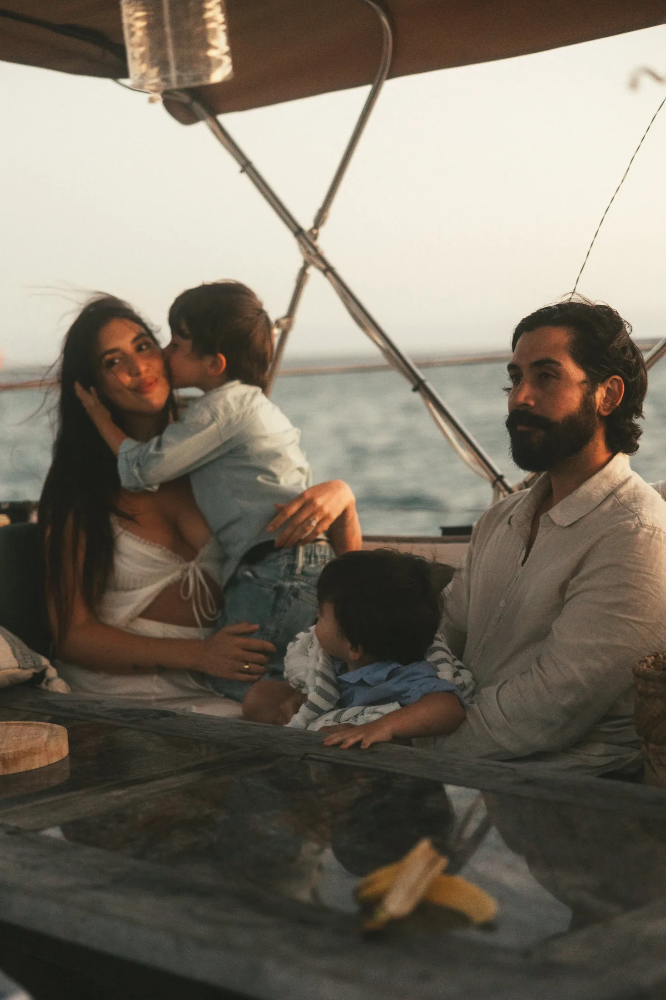
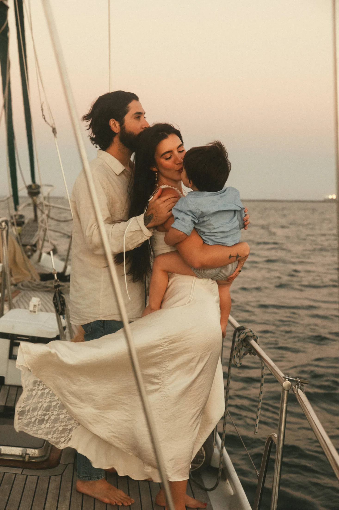

The Team

Mayke is a family-run creative agency founded by husband-and-wife team Nia and Ricardo Arroyo in Laguna Beach, California, where we live and raise our children.
We built Mayke around a simple idea: the best creative work comes from understanding both the people a brand is trying to reach and the business behind it.
Our backgrounds are different but complementary. Together, we bring strategy, creative, technology, and real-world hospitality experience under one roof.
Nia Arroyo
Creative Direction
Brand Strategy
Marketing
Nia brings more than a decade of experience in marketing and brand building, spanning creative direction, influencer and celebrity relations, experiential marketing, events, content, and brand strategy.
Her work centers on how brands make people feel—and how that feeling inspires them to experience, share, visit, wear, eat, or buy something.
At Mayke, Nia leads creative direction and marketing strategy, shaping brand identities, voices, campaigns, content, partnerships, and real-world experiences. Her approach combines a strong creative point of view with an understanding of culture, consumer behavior, and what captures people’s attention.
Ricardo Arroyo
Development
Digital Design
Technology
Ricardo brings together design, technology, and nearly a decade of hospitality leadership.
His creative career began in graphic design before evolving into web design and development. Today, his work spans websites, digital experiences, web applications, and app development. He approaches digital work with an eye toward both how something looks and feels and how it functions behind the scenes.
Before moving into design and technology, Ricardo spent nearly a decade in hospitality management. That experience shapes the way he builds, with an emphasis on customer journeys, intuitive experiences, operational realities, and the details that make interactions feel effortless.
At Mayke, Ricardo leads digital design and development, turning creative concepts into thoughtful, functional experiences built for real people.
Close to Home
Mayke started in Laguna Beach because this is home.
We’re raising our family here, and our lives are intertwined with the businesses, restaurants, hotels, makers, and people that make this community what it is. Building Mayke here has naturally shaped the kind of agency we want to run: personal, collaborative, and genuinely invested in the businesses we work with.
We don’t believe an agency should feel removed from the brands it represents. We get to know the people behind the business, understand what’s happening day to day, and create work that feels specific to them rather than pulled from an agency playbook.
For our local clients, that closeness has real advantages. We can stop by to capture something happening that afternoon. We already understand the community and the people they’re speaking to. We can introduce businesses and people who should know one another. We’re not simply marketing a place from the outside—we’re part of the same community.
And while Mayke began here, our work isn’t defined by geography. We bring that same level of attention, accessibility, and involvement to every brand we work with.
